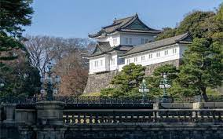

Le Palais Impérial du Japon, connu sous le nom de « Kokyo » en japonais, est la résidence officielle de l'empereur du Japon. Situé au cœur de Tokyo,
le palais est entouré de vastes jardins et est un symbole important de la monarchie japonaise et de l'histoire du Japon.avis des clients